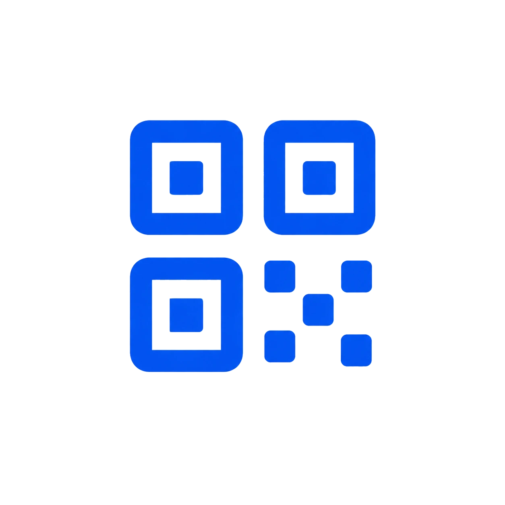

AHORRA 20%

Tarjeta NFC
Tarjeta NFC personalizada con perfil digital incluido.
Ver producto Solicitar cotizaciónTu tarjeta TapLoop abre tu perfil al instante. Comparte contacto, WhatsApp, redes y enlaces sin aplicaciones.
Compatible con iPhone y Android · Sin aplicaciones
Ideal para ventas, equipos y networking profesional

Elige la opción ideal para ti
Tarjeta NFC personalizada con perfil digital incluido.
Ver producto Solicitar cotización
Tarjeta NFC metálica premium con perfil digital incluido.
Ver producto Solicitar cotizaciónUna vista rápida de cómo se presenta tu perfil digital desde una tarjeta NFC TapLoop.
Más de 1,500 tarjetas entregadas el último mes.
Práctica para ventas, eventos y equipos que necesitan compartir contacto al instante.
Ver tarjeta PVCUna presentación premium para perfiles ejecutivos, directivos y marcas con mayor presencia.
Ver tarjeta metálicaRecibe, aprueba y empieza a compartir tu perfil en 4 pasos
Propuesta con diseño, cantidad y necesidades de tu equipo.

Configuramos tarjeta y perfil digital por colaborador.

Fabricamos y enviamos todo listo en 3-5 días hábiles.

Comparte al instante y gestiona perfiles, métricas y leads.

Actualiza tu información, comparte tus enlaces y permite que guarden tus datos al instante.

de forma clara y profesional.
cuando lo necesites.
para guardar y compartir.


Código QR TikTok TeléfonoAdministra los perfiles, las tarjetas y la información de contacto profesional de todo tu equipo desde un solo lugar.
Un perfil para cada integrante.
Logo, colores e información alineados con tu empresa.
Actualiza puestos, teléfonos y enlaces sin reemplazar tarjetas.
Gestiona todo tu equipo desde un solo lugar.

Personalización para empresas
Creamos tarjetas NFC y perfiles digitales alineados con tu identidad visual, logo, colores y datos profesionales.


Cada interacción es una oportunidad para dejar una gran impresión.
Resolvemos las dudas más comunes sobre nuestras tarjetas NFC y perfiles digitales.
Es una tarjeta física con chip NFC y código QR que abre un perfil digital para compartir contacto, WhatsApp, redes sociales, sitio web y otros enlaces.
No. La tarjeta funciona con NFC o QR desde dispositivos compatibles, sin necesidad de instalar una app.
Incluye tarjeta personalizada, chip NFC programado, código QR y perfil digital según la solución elegida.
Sí. Dependiendo de la solución contratada, puedes actualizar tus datos y enlaces sin reemplazar la tarjeta.
Sí. Creamos un diseño corporativo y personalizamos los datos de cada colaborador.
El tiempo depende de la cantidad, material y aprobación final del diseño. Se confirma en cada cotización.
Cuéntanos cuántas necesitas y nuestro equipo te prepara una propuesta personalizada.